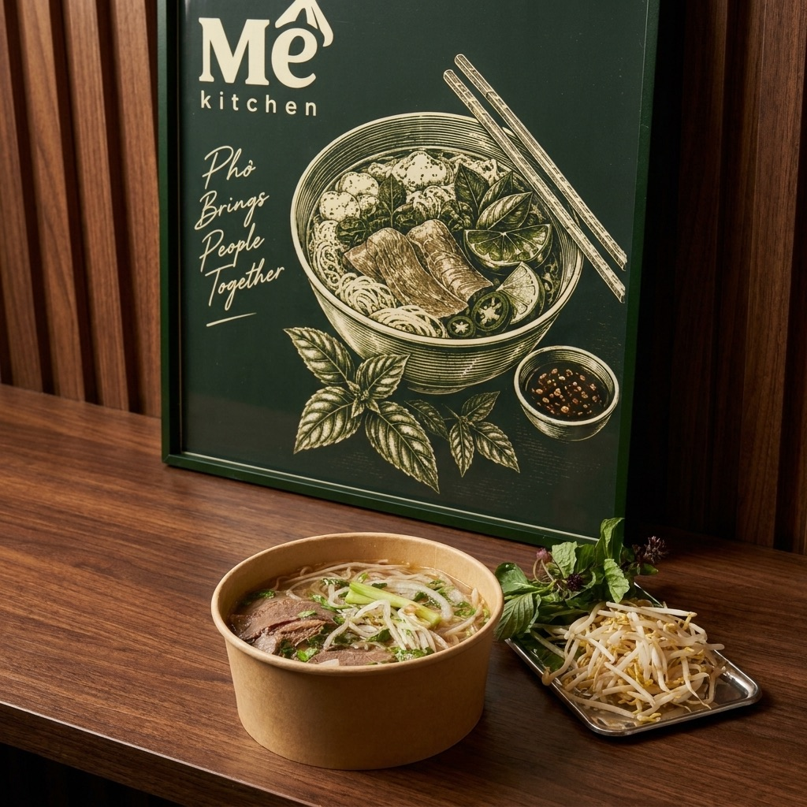
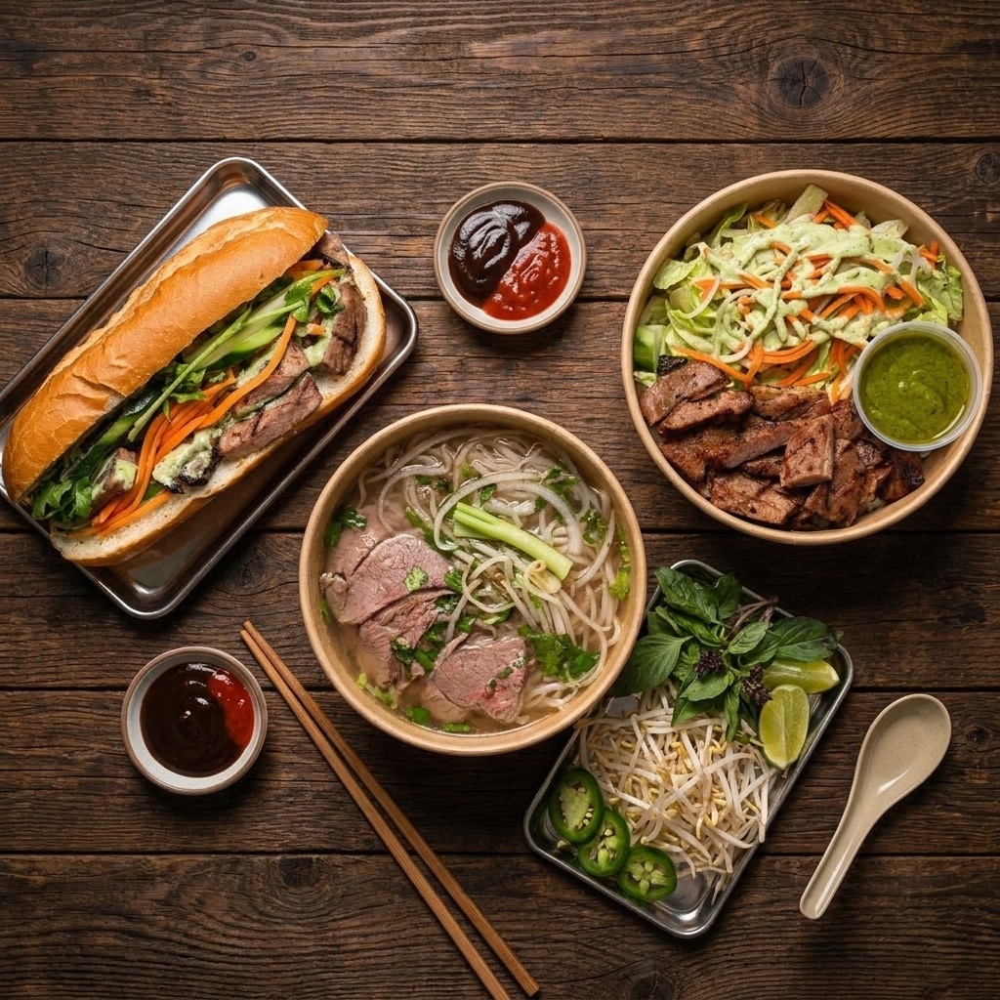
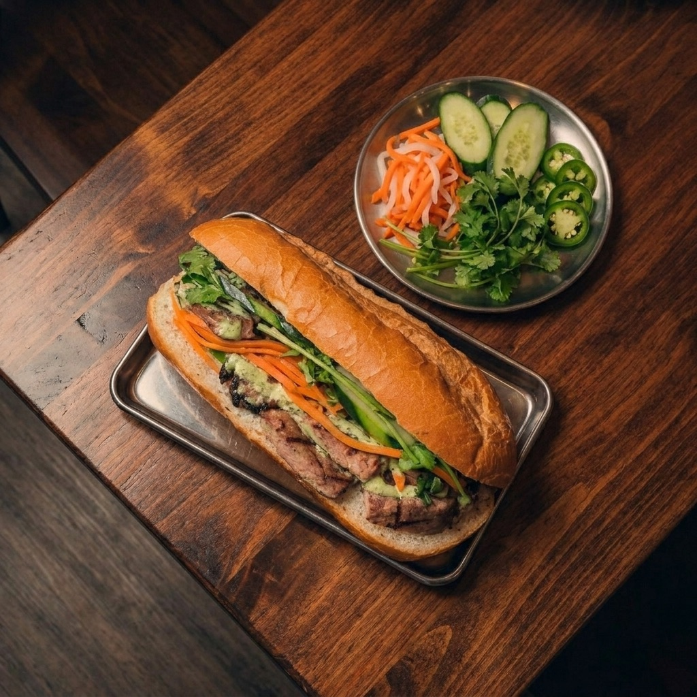
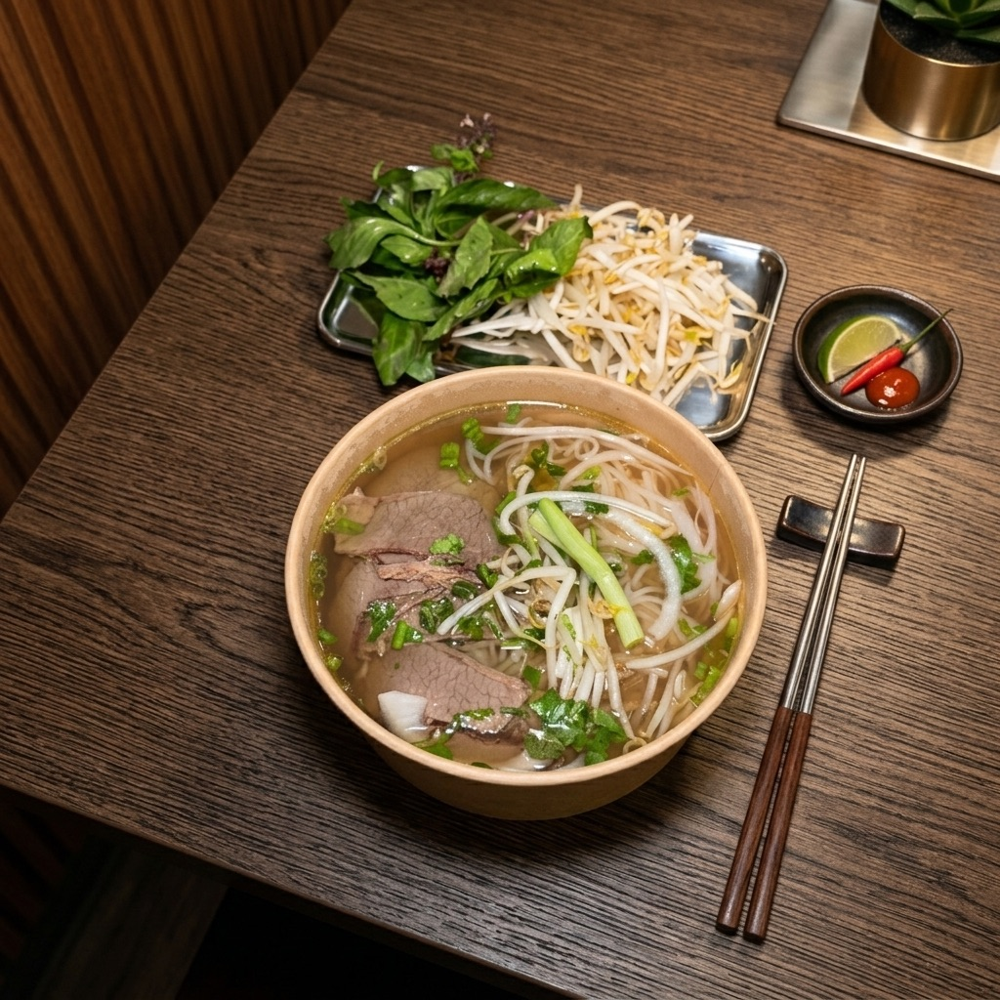
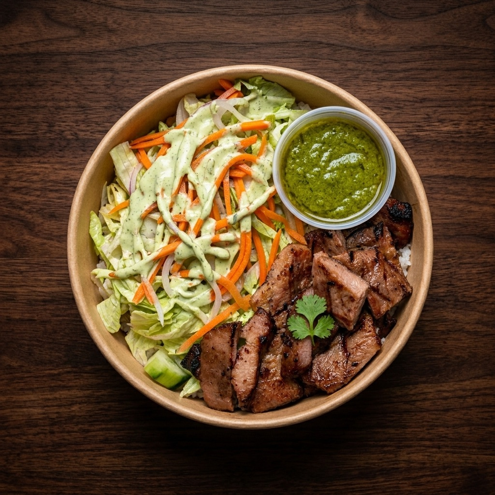

Then:No hour to sit down. Now:Mê on the Ave.
Mê Kitchen started with a simple idea: create the Vietnamese restaurant we wish we had when we were students at UW. Phở, bánh mì and rice bowls, fast-casual, on University Way.
Scroll to begin
Before Mê Kitchen
We were students here once. This is where the story starts.
-
Then · 01
We know life in the U District
As former University of Washington students, we know what life in the U District is like.
Between classes, work, studying, and everything else, there were plenty of days when we wanted a good meal but didn’t have an hour to sit down for one.
Switch to Now to see a day on the Ave today.
Then A day on the Ave, back then- Classes
- Work
- Studying
- Everything else
- An hour to sit down and eat (often the first thing to go)
Now A day on the Ave, now- Grabbing a bánh mì on your lunch break
- Sitting down over a bowl of phở with friends
- Picking up dinner on your way home
-
Then · 02
What we wanted
“Something quick and convenient without feeling like we had to sacrifice quality.”
That idea became Mê Kitchen.
Vietnamese food made for exactly that kind of day: good food, in your hands quickly.
Mê Kitchen on the Ave
Made for the day we used to have, and the one you are having now.
-
Now · 01
The classics, done well
We built Mê around the Vietnamese food we know and love (phở, bánh mì, rice bowls and other familiar favorites), served in a fast-casual format made for everyday life.
Our menu isn’t about reinventing Vietnamese food or making it more complicated than it needs to be. It’s about doing the classics well, using quality ingredients, building bold flavors, and getting good food into your hands quickly.

-
Now · 02
Back where our story started
Being in the U District was important to us because this neighborhood is part of our own story.
Now we get to build something for the neighbors and community that make the Ave what it is.
4213 University Wy NE, on the Ave.
The storefront on University Way -
Now · 03
Why we called it Mê
The name Mê comes from a Vietnamese word used when you really love something: when you’re hooked on it, craving it, or simply can’t get enough.
That’s the feeling we want our food to leave you with.
Mê
- How you say it“may”
- What it meansWhen you really love something
- How it feelsHooked on it, craving it, can’t get enough
A craving, an attachment, an obsession.
Press Mê for what it means -
Now · 04
The place you come back to
At the end of the day, we want Mê Kitchen to be the place you can come back to again and again.
Whether you’re grabbing a bánh mì on your lunch break, sitting down over a bowl of phở with friends, or picking up dinner on your way home, we want you to remember one thing.
-

On your lunch breakA bánh mì in your hand -

With friendsSitting down over a bowl of phở -

On your way homeDinner, picked up
-
Good Vietnamese food doesn’t have to be complicated.
It just has to be done right.
Keep in touch
Join our loyalty list and we will keep you posted as we get ready to open.
Join the loyalty list